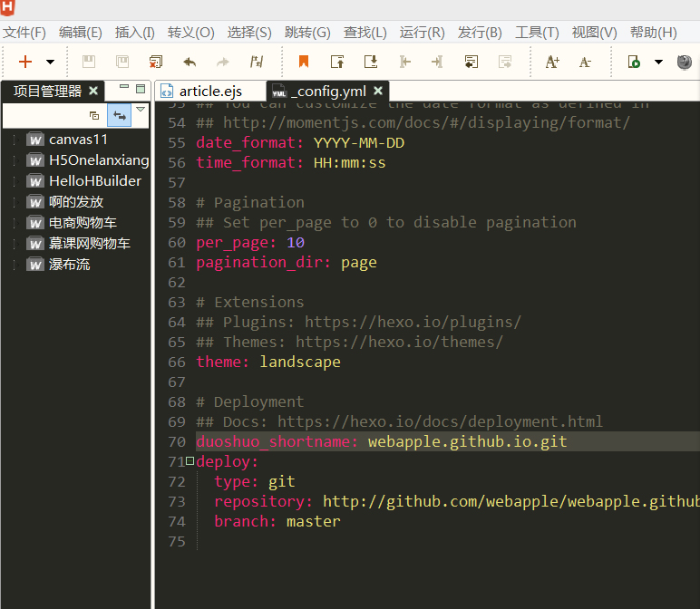
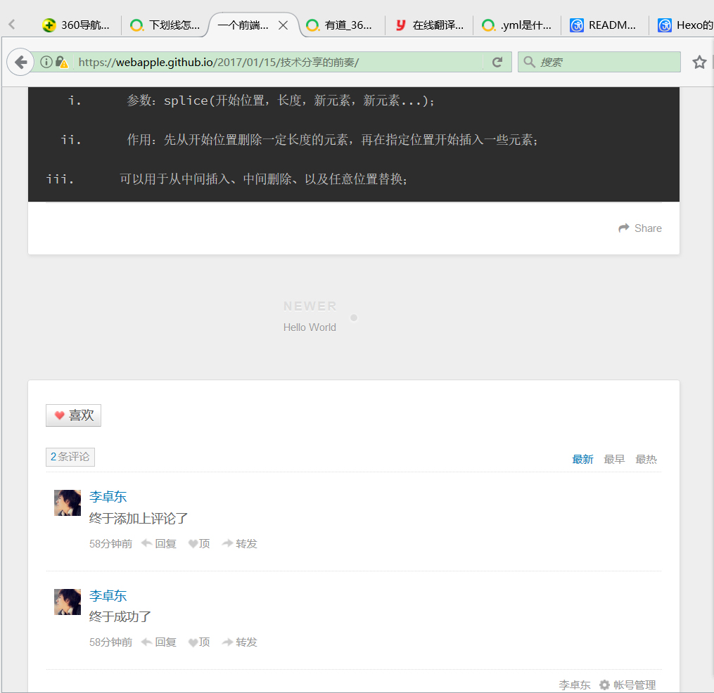

Hexo是使用node.js技术开发的一个纯静态博客系统，Hexo默认使用的评论插件是Disqus，Disqus上用的全是”非死不可“或者推特等国外的社交网站，不符合我天朝国情特此推出本教程。使用步骤如下：
更改_config.yml文件（config中文意思为配置）
这里我们运用一个插件叫“多说”（是一个专业的评论插件）在_config.yml中添加多说的配置：1duoshuo_shortname: 你站点的short_name我的博客地址是https://webapple.github.io/我博客地址的short_name（二级域名）就是webapple.github.io.git（我在这里就转了好久才弄好，我把short_name当成了多说的网址）
我用HBuilder改配置的图片修改themes\landscape\layout_partial\article.ejs模板
把1234567<% if (!index && post.comments && config.disqus_shortname){ %><section id="comments"><div id="disqus_thread"><noscript>Please enable JavaScript to view the <a href="//disqus.com/?ref_noscript">comments powered by Disqus.</a></noscript></div></section><% } %>改为
1234567891011121314151617181920<% if (!index && post.comments && config.duoshuo_shortname){ %><section id="comments"><!-- 多说评论框 start --><div class="ds-thread" data-thread-key="<%= post.layout %>-<%= post.slug %>" data-title="<%= post.title %>" data-url="<%= page.permalink %>"></div><!-- 多说评论框 end --><!-- 多说公共JS代码 start (一个网页只需插入一次) --><script type="text/javascript">var duoshuoQuery = {short_name:'<%= config.duoshuo_shortname %>'};(function() {var ds = document.createElement('script');ds.type = 'text/javascript';ds.async = true;ds.src = (document.location.protocol == 'https:' ? 'https:' : 'http:') + '//static.duoshuo.com/embed.js';ds.charset = 'UTF-8';(document.getElementsByTagName('head')[0]|| document.getElementsByTagName('body')[0]).appendChild(ds);})();</script><!-- 多说公共JS代码 end --></section><% } %>
3.然后提交到github上就行了(在主页上没有显示，在博客的单页面上显示）。1$ hexo g
|
|
